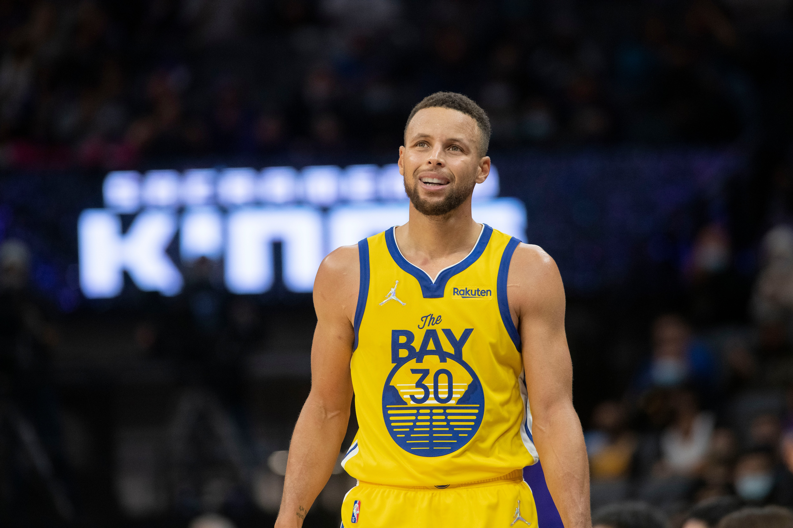
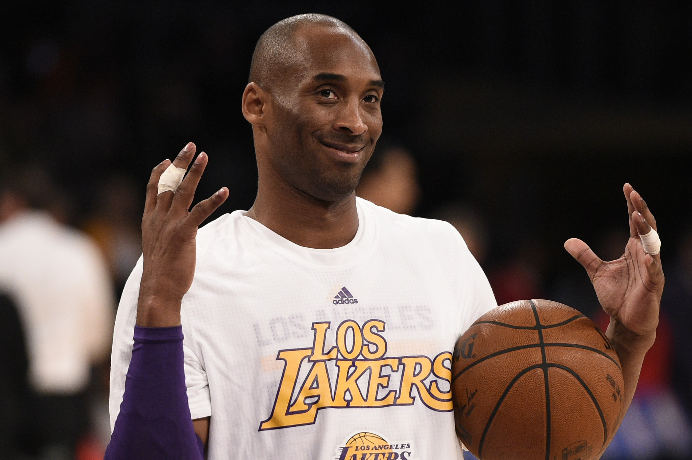
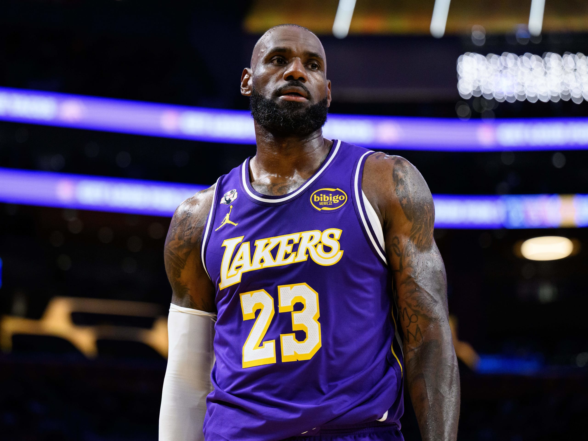
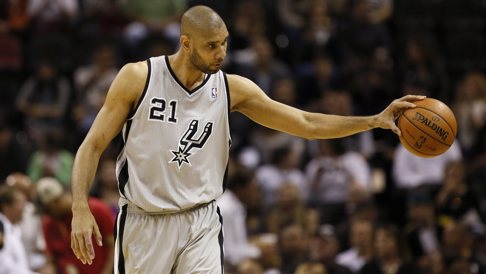
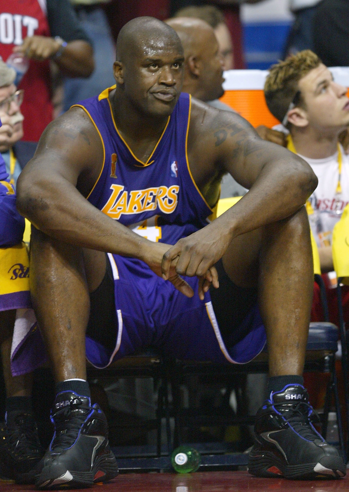

The Five Positions
A basketball team has five players on the court. Traditionally they are numbered 1 through 5. The smaller numbers handle the ball and shoot; the bigger numbers play near the basket.
1. Point Guard (PG) — The Floor General

The point guard runs the team's offense. They bring the ball up the court, read the defense, and pass to the right teammate. Famous examples: Stephen Curry, Chris Paul.
2. Shooting Guard (SG) — The Scorer

The shooting guard's main job is to put points on the board, often through outside shooting and off-ball movement. Famous examples: Michael Jordan, Kobe Bryant, Klay Thompson.
3. Small Forward (SF) — The All-Around Player

The small forward is taller than guards and quicker than big men. They score, rebound, pass and defend. Famous examples: LeBron James, Kevin Durant.
4. Power Forward (PF) — The Workhorse

The power forward does the dirty work: setting screens, fighting for rebounds, defending the paint. Famous examples: Tim Duncan, Giannis Antetokounmpo.
5. Center (C) — The Paint Protector

The center usually is the tallest player on the court. They protect the basket, grab rebounds, and finish near the rim. Famous examples: Shaquille O'Neal, Nikola Jokic.